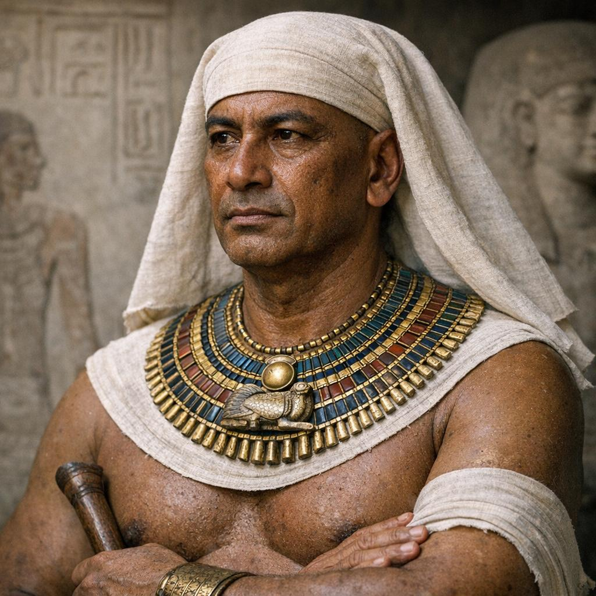

Mereruka
Born: c. 24th Century BC
Known for: One of Egypt's most powerful officials.
Died: Early 23rd Century BC
Age: unknown
Allegiance: Pharaoh Teti of Egypt; The central administration of the Old Kingdom
Conflicts: Mereruka navigated a period of significant political instability during the Sixth Dynasty of Egypt, with his primary conflicts involving a violent transition of power, the assassination of his patron king, and the enforcement of harsh state taxation. As the powerful Vizier under Pharaoh Teti, he held an unprecedented 84 titles, a level of control that likely made him both a central figure in—and a target of—courtly intrigue.
Cause of Death: There is no recorded biological cause of death for Mereruka, as primary sources from the 23rd century BC do not detail medical conditions. However, physical examinations of his remains and the historical context of the Sixth Dynasty suggest he died in middle age or slightly older during a period of intense political unrest.
Resting Place: Saqqara, Egypt. The mastaba of Mereruka is the largest and most elaborate of all the non-royal tombs in Saqqara with 33 rooms or chambers in total.
Spouses: Seshseshet Waatetkhethor
Mereruka served during the Sixth Dynasty of Egypt as one of Egypt's most powerful officials at a time when the influence of local state noblemen was increasing in wealth and power. Mereruka held numerous titles along with that of Vizier, which made him the most powerful person in Egypt after the king himself. Among the other official positions that Mereruka held were "Director of all the king's works," "Governor of the palace," "Chief lector-priest," "Overseer of the royal record scribes," and "Inspector of the priests attached to the pyramid of Teti." He was married to Seshseshet Waatetkhethor, daughter of King Teti. His mother was named Nedjetempet and he possibly had a brother named Ihy, though this may be the same individual as Ihyemsaf, his grandson.